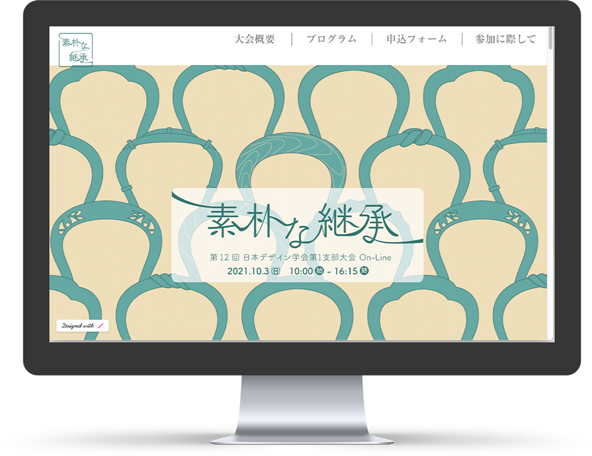
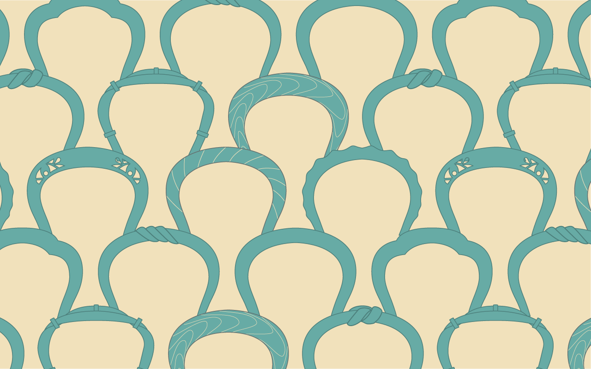
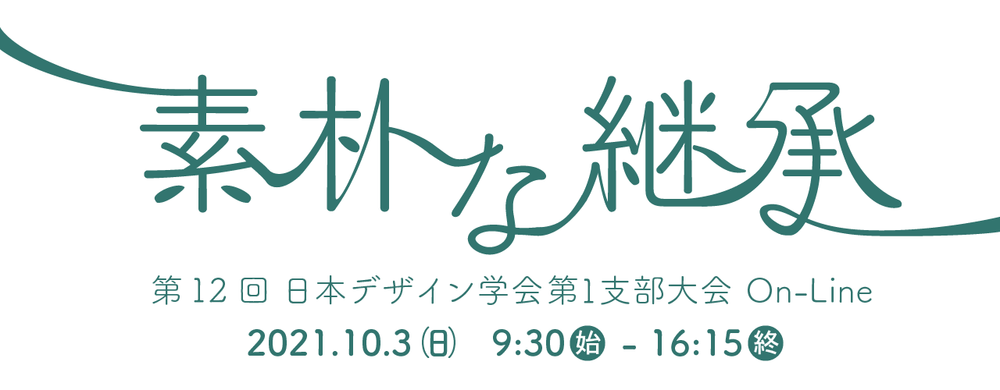
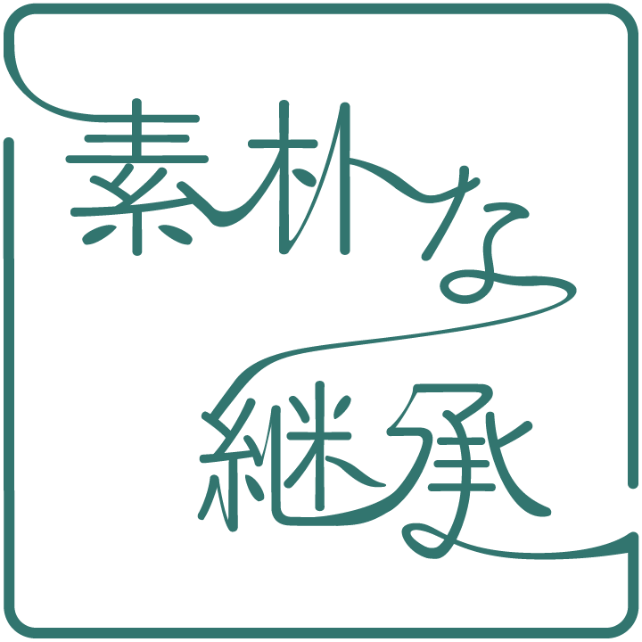
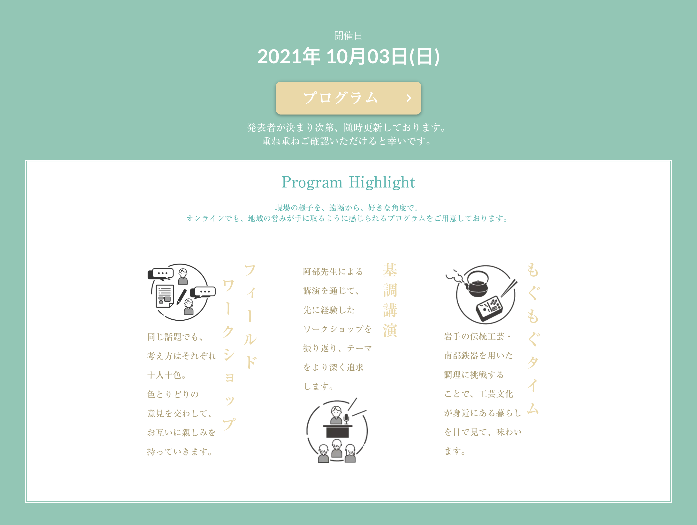

日本デザイン学会第一支部岩手大会HP（共同制作）
「素朴な継承」
1学年
授業外制作


- 制作目標
- ワークショップイベントの広報サイトの制作
- ターゲット
- デザインを学ぶ学生、北海道・東北地域市民
- コンセプト
- 岩手県の素朴な伝統工芸文化を伝えるサイト
学校への依頼があり、学科内で募集された日本デザイン学会のワークショップ広報サイトの制作アルバイトに参加しました。初めてのwebサイト共同制作ながら、当時のデザインの知識を活用して積極的に設計提案に関わりました。
制作過程
1.依頼内容から情報設計
デザインのワークショップのテーマが「素朴な継承」であることから、イメージコンセプトを制作チームで話し合い、決定。開催所が岩手であることから、県内の伝統工芸をモチーフとしたビジュアルを使い、岩手県のシンボルカラー「納戸色」をメインに日本の伝統色をサイト配色に使用する。また和を感じさせるフォント「筑紫A丸ゴシック」を選定。
2.案出し
メインビジュアルを学生3人でそれぞれ考案した。自分は、南部鉄器の取手をモチーフとしたパターン画像を提案した。 また、「素朴な継承」タイトルロゴも考案。「継承」という文字から、一本の線が続いていくようなイメージで表現したものが採用された。



3.制作
Webサイトの構築は、制作期間が短いことからstudioでノーコードの共同編集をした。 事前にXDで制作したモックアップを基にwebサイトを構築した。また、作業分担や進捗報告はLINE上で随時連絡を交わした。
4.納品
完成品を依頼者へ納品後。追加で記載する情報や、レイアウトの調整を再び依頼された。
5.修正
修正内容通り、追加情報の項目のデザイン作成を担当した。

また、全体の文字が大きい、余白の不足といったレイアウトの修正も行い、最終完成品を納品。依頼者からは、テーマや依頼内容を汲みながらビジュアル面で学生らしい若々しさが表れ、次世代の伝統工芸の継承者である若者に興味を持ってもらえそうだと好評をいただいた。
ポイント
タイトルロゴは「素朴な継承」のテーマが視覚的に伝わるように、文字が一文字ずつ繋がるという意図を込めたデザインに力を入れています。